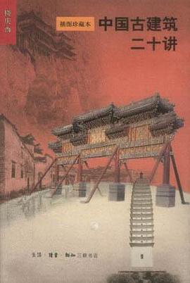

《中国古建筑二十讲》

总体观点
中国古代建筑以‘木构架’为核心灵魂，与西方砖石拱券体系截然不同：‘墙倒屋不塌’的梁柱体系，展现了中国人崇尚自然、弹性应对地震与地质变动的独特营造哲学。
古建筑是传统礼制、宗族观念与宇宙观的立体投射：从严格遵循尊卑秩序的院落进深轴线，到屋顶庑殿歇山的等级规制，每一处构件都在无声诉说着中国人的伦理秩序。
中国古建的伟大，不仅在于巧夺天工的结构力学（如斗栱的层层挑出），更在于将雕刻、彩画、匾额、砖雕与自然山水融为一体，创造出让人安居乐业的人性化诗意家园。
核心观点 共 6 条
-
1. ‘墙倒屋不塌’：中国木构架体系超越西方砖石的抗震结构智慧
依靠立柱、大梁与枋木的榫卯柔性咬合，地震来临时整个木框架能够自由摇晃吸收震波能量，墙体仅充当围护隔断而不承重。
例 ·山西应县木塔高达六十七米，历经近千年数十次大地震摧残与军阀炮击，凭借多层暗层与榫卯斗栱网络的柔性吸震依然傲立不倒。 -
2. ‘斗栱’：中国古建筑最富标志性、集力学与美学于一身的核心密码
通过斗、栱、昂在柱头层层咬合挑出，既将沉重深远的屋檐重量均匀分散传递至柱身，又形成了如花朵绽放般雄浑绚丽的檐下阴影。
例 ·五台山佛光寺大殿建于唐代大中十一年，其柱头斗栱断面高达两米余，出檐深达四米，展现了盛唐木构建筑浑厚博大的雄强气魄。 -
3. ‘屋顶的冠冕’：等级森严的屋顶形态与反宇飞檐的轻盈飞动
重檐庑殿（最高）、重檐歇山、单檐悬山、硬山到攒尖，古建筑通过屋顶轮廓界定身份尊卑；四角微微翘起的飞檐则让沉重的大屋顶宛如大鹏展翅。
例 ·故宫太和殿作为紫禁城核心大殿，享用最高等级的重檐庑殿顶与整排十只脊兽，展现出至高无上的皇家威仪与庄严。 -
4. ‘庭院深深深几许’：进深轴线是中国人空间叙事的情感节拍器
从大门、影壁、垂花门到前厅、正房、后罩房，层层院落构成了严密的空间礼序，越往深处走越私密、越神圣，形成庄严的礼乐节奏。
例 ·北京标准四合院以垂花门作为内外院分界，外人只能止步于外院倒座房，穿过垂花门方是家人生活居住的正房与厢房所在。 -
5. ‘因地制宜的乡土民居’：大江南北应对气候环境的多元生态奇迹
陕北窑洞冬暖夏凉、皖南徽派马头墙防火聚水、福建土楼御寇聚族而居，中国民间建筑展现出对自然风土最接地气的因应智慧。
例 ·宏村徽派古民居引高山泉水贯通全村家家户户门前，月沼与南湖既可防火洗涤，又调节了整个徽派聚落的夏季小气候。 -
6. 彩画与雕刻：赋予木石以灵魂与吉祥叙事的文化表皮
和玺彩画的龙凤尊贵、旋子彩画的规整明艳、苏式彩画的江南画舫雅趣，建筑装饰不仅防腐防潮，更寄托了中国人祈福禳灾的美好心愿。
例 ·颐和园长廊全长七百余米，梁枋上绘有数万幅《三国演义》《水浒传》与山水花鸟彩画，使漫步避雨的长廊变身中国传统文化露天画廊。
全书结构 20 部分 官方目录已核验
-
第一讲 从“墙倒屋不塌”说起
从中国古代著名俗语“墙倒屋不塌”切入，深入浅出地讲解中国传统木构架建筑体系的核心特征与结构智慧：立柱、横梁、顺檩与榫卯连接的柔性抗震机制。
例 ·抬梁式与穿斗式木构架的力学原理；山西应县木塔历经千年大地震屹立不倒的木构奥秘；墙体仅起隔断维护作用的“框架结构”超前理念。 -
第二讲 北京——中国古代城市规划的杰作
以北京古城为例，剖析中国古代都城规划中体现的《周礼·考工记》礼制思想：中轴对称、左祖右社、面朝后市的严整格局与皇权至上的空间秩序。
例 ·贯穿南北七点八公里的北京壮美中轴线；前朝后寝与紫禁城的三朝五门制度；棋盘式道路网与街巷胡同的有机融合。 -
第三讲 从四合院到紫禁城
揭示中国传统建筑无论规模大小，皆以“院落”为基本细胞的组群艺术规律，从北京普通百姓居住的四合院一路类比递进至封建帝王居住的最高等级院落组群——紫禁城。
例 ·标准三进四合院的影壁、垂花门与正房厢房长幼尊卑秩序；紫禁城太和殿、中和殿、保和殿“三大殿”大院落与后三宫小院落的层层递进。 -
第四讲 从兵马俑到清陵
系统梳理中国古代帝王陵寝制度自先秦至明清的演变流变，剖析“事死如事生”的宗法礼制如何转化为宏大的地下宫殿与依山为陵的壮丽山川陵园环境。
例 ·秦始皇陵兵马俑军阵的地下军团震撼；汉唐依山为陵（如昭陵、乾陵）的大气魄；明清陵寝（明十三陵、清东陵）神道石像生与方城明楼的严整礼制。 -
第五讲 祭祀
深入探讨中国古代国家祭祀礼仪建筑的精神内核：阐述古代统治者“国之大事，在祀与戎”的观念如何通过天坛、地坛、日坛、月坛与先农坛的空间形制得以神圣化。
例 ·北京天坛祈年殿圆形三层重檐与圜丘坛九重石台体现的“天圆地方”与数字九的崇拜；皇家孟春祈谷大典的礼仪空间。 -
第六讲 祖庙与祠堂
解析中国宗法社会崇拜祖先的建筑载体：从国家最高等级的皇家太庙（太庙九庙之制），到遍布各省民间的宗族祠堂，展现血缘认同与伦理宗法对建筑空间的深刻塑造。
例 ·北京太庙（今劳动人民文化宫）前殿七进开间的帝王规模；徽州宗祠与岭南陈家祠的精美砖木石雕与忠孝节义规训空间。 -
第七讲 佛教建筑与佛山
追溯东汉以降印度佛教建筑传入中国后的本土化演进：寺院如何逐步吸纳中国传统宫殿式院落格局，形成“伽蓝七堂”的标准形制，并结合中国名山大川构建四大佛教名山道场。
例 ·山西五台山佛光寺大殿（唐代木构国宝）；伽蓝轴线上的山门、天王殿、大雄宝殿与藏经阁；峨眉山、普陀山寺庙群因山就势的布局。 -
第八讲 佛塔
详述原本源于印度存放佛舍利的“窣堵波”（Stupa），在中国如何与本土传统楼阁建筑融合，演化出楼阁式塔、密檐式塔、单层塔与金刚宝座塔等多姿多彩的佛塔流派。
例 ·西安大雁塔（唐代楼阁式砖塔）；北京天宁寺塔（辽代密檐式砖塔）；河南登封嵩岳寺塔（北魏十二边形密檐塔）；北京大正觉寺五塔。 -
第九讲 伊斯兰教与清真寺
考察伊斯兰教传入中国后清真寺建筑所展现的跨文化融合：既坚守阿拉伯朝向麦加（西向）礼拜的宗教教规，又广泛吸纳中国传统木结构大屋顶与进深院落形制。
例 ·西安化觉巷清真大寺的中式四进院落与飞檐重阁；北京牛街礼拜寺；新疆喀什艾提尕尔清真寺的西域伊斯兰砖拱穹顶特色。 -
第十讲 皇家园林
剖析中国古代皇家园林“普天之下，莫非王土”的恢宏气象与造园艺术：融自然山水之广袤与江南名胜之精粹于一体，实现政治统治、起居宴乐与文化审美的高度统一。
例 ·承德避暑山庄“移天缩地在君怀”的塞外山水；北京颐和园万寿山与昆明湖的借景玉泉山造园杰作；圆明园四十景与西洋楼遗存。 -
第十一讲 私家园林
聚焦以苏州园林为代表的江南文人私家园林：揭示士大夫官僚在有限的城市居所中“虽由人作，宛自天开”，通过叠山理水、花木配置与亭台楼阁构筑壶中天地的文人隐逸意境。
例 ·拙政园的水体环抱与借景北寺塔；留园空间大小对比与冠云峰独石；网师园小巧精妙的以池水为中心布局与漏窗框景。 -
第十二讲 院落住宅
全景展现中国幅员辽阔的地域气候与地理环境下孕育出的民居多样性：北方合院的封闭向阳防御、江南水乡民居的依河枕水、闽粤客家土楼的严密聚居防御。
例 ·晋中乔家大院高墙深院的城堡式布局；江南周庄、乌镇“粉墙黛瓦”马头墙与临水河埠；福建永定客家圆楼的防御堡垒机制。 -
第十三讲 乡土建筑
走出官式建筑的宏大叙事，探访生生不息的中国民间乡土聚落：水乡古镇、窑洞生土建筑、西南干栏式吊脚楼以及深山古村落选址的天人合一智慧。
例 ·陕北高原顺应黄土立面凿穴而居的靠崖窑洞；湘西土家族依山傍水的吊脚楼；徽州宏村仿生牛形水系古水利聚落规划。 -
第十四讲 牌楼、华表、影壁及其他
专门赏析中国古建筑群前不可或缺的“点睛之笔”与引导性附属构筑物：牌楼的旌表纪念功能、华表的通天与望帝归向、影壁的视线遮挡与聚气护风。
例 ·承德普陀宗乘之庙前的五彩琉璃牌坊；天安门前后雕刻蟠龙与蹲兽（犼）的汉白玉华表；紫禁城皇极门九龙壁与四合院砖雕影壁。 -
第十五讲 建筑装饰
深入中国古建筑绚丽细部的“三雕一画”（木雕、石雕、砖雕与彩画）：剖析这些装饰元素如何兼具构件保护防腐的实用功能与寄托吉祥寓意的审美教化。
例 ·梁枋上的和玺彩画、旋子彩画与苏式彩画的严密等级分工；隔扇门裙板上精细的透雕工艺；柱础石、踏跺上的水波云纹石雕。 -
第十六讲 龙的世界与狮子王国
聚焦中国古代建筑中最具辨识度的两大动物图腾：作为最高皇权与水神化身的“龙”的万千形态，以及作为守护辟邪之兽的“狮子”的本土化形变与性格塑造。
例 ·紫禁城太和殿内外的蟠龙藻井与丹陛石九龙戏珠；天安门前威风凛凛的明代石狮；卢沟桥数百只神态各异、抚幼嬉戏的石狮雕刻。 -
第十七讲 神异的色彩
解密中国古建筑色彩体系的等级规定与阴阳五行哲学意涵：为何皇家建筑垄断黄琉璃瓦与朱红立柱，王府用绿瓦，而寻常百姓家只能使用灰瓦白墙。
例 ·紫禁城黄瓦红墙与汉白玉台基构成的崇高威严；天坛祈年殿三层深蓝琉璃瓦象征浩瀚苍穹；江南民居黑白灰素雅色调与自然山水的和谐相衬。 -
第十八讲 古建筑与风水
客观科学地剖析中国传统“风水”（堪舆）学说在古建筑与聚落选址中的实践逻辑：剔除神秘迷信色彩，提炼其背后的古代环境地理学、水文地质与日照微气候选择智慧。
例 ·“负阴抱阳、背山面水”的理想定居模式对冬季北风的阻挡与夏季南风的引导；明十三陵天寿山盆地的绝佳生态选址与水系环抱。 -
第十九讲 国徽上的天安门
聚焦新中国国家象征的建筑丰碑——天安门城楼：从明代承天门的历史沿革，到开国大典的历史转折，剖析其城台、重檐歇山顶与雄伟比例如何升华为中华民族尊严的政治与艺术符号。
例 ·明清天安门城楼的建筑规制与黄瓦飞檐；梁思成、林徽因主持国徽设计时将天安门定为核心图案的深厚考量；天安门广场人民英雄纪念碑的现代民族形式探索。 -
第二十讲 梁思成与中国建筑
深情回顾中国建筑历史学科奠基人梁思成、林徽因与中国营造学社先驱的学术传奇：他们在兵荒马乱的艰苦岁月中跋山涉水调查测绘千百座古建筑，创立中国建筑史学体系的不朽功勋。
例 ·梁思成、林徽因凭借《营造法式》破译佛光寺唐代大殿“中国第一国宝”的历史时刻；《中国建筑史》的撰写；抗战期间李庄的学术坚守与古建筑保护遗产。